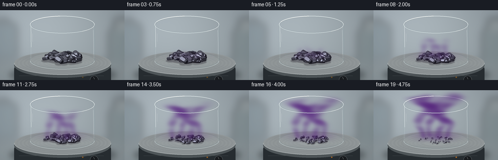
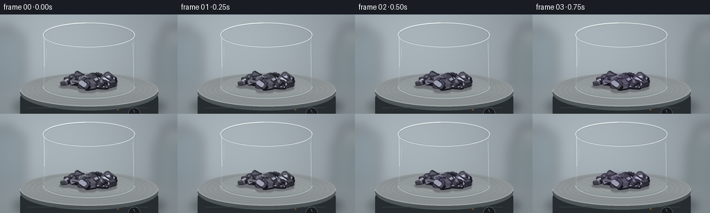

CODING AGENTS AS PIXEL WORLD MODELS
traex/GPT-6.1-Sol · phygen_118
点击播放 · 原生 RGB 像素
逐轮保存的候选
回放视频、检查图与代码变化。
每份候选均可单独播放。实际图片检查记录在下方工具轨迹中。
候选 01播放与检查图
点击播放 · 原生 RGB 像素


展开代码变化
--- 上一保存版本
+++ 本次保存版本
@@ -0,0 +1,247 @@
+"""Procedural macro timelapse of crystalline iodine sublimating under gentle heat.
+Only numpy/Pillow and an explicit geometric/volumetric renderer are used.
+"""
+from pathlib import Path
+import json
+import math
+import numpy as np
+from PIL import Image, ImageDraw, ImageFilter
+from artifact_io import save
+
+ROOT=Path(__file__).resolve().parent
+SPEC=json.loads((ROOT/'task_spec.json').read_text())
+W,H=SPEC['width'],SPEC['height']
+SS=3
+RW,RH=W*SS,H*SS
+S=48.0
+CY=104.0
+A=0.27
+B=math.sqrt(1-A*A)
+R=1.38
+HEIGHT=1.61
+rng=np.random.default_rng(118)
+
+def project(v):
+ v=np.asarray(v)
+ return np.stack([128+S*v[...,0],CY-S*(A*v[...,1]+B*v[...,2])],axis=-1)
+
+def ell(draw,box,fill=None,outline=None,width=1):
+ draw.ellipse(tuple(int(round(v*SS)) for v in box),fill=fill,outline=outline,width=max(1,round(width*SS)))
+
+def line(draw,pts,fill,width=1):
+ draw.line([(round(x*SS),round(y*SS)) for x,y in pts],fill=fill,width=max(1,round(width*SS)))
+
+def polygon(draw,pts,fill):
+ draw.polygon([(round(x*SS),round(y*SS)) for x,y in pts],fill=fill)
+
+def arc(draw,box,start,end,fill,width=1):
+ draw.arc(tuple(round(v*SS) for v in box),start,end,fill=fill,width=max(1,round(width*SS)))
+
+# Fixed laboratory surroundings, softly out of focus, and a brushed metal heater.
+yy,xx=np.mgrid[0:RH,0:RW].astype(np.float32)
+xx/=SS; yy/=SS
+light=np.exp(-((xx-76)/152)**2-((yy-34)/125)**2)
+vign=((xx-128)/180)**2+((yy-68)/145)**2
+bg=np.stack([137+33*light-12*vign,147+34*light-12*vign,151+36*light-9*vign],-1)
+bg+=rng.normal(0,.38,(RH,RW,1))
+base=Image.fromarray(np.uint8(np.clip(bg,0,255)))
+soft=Image.new('RGBA',(RW,RH))
+d=ImageDraw.Draw(soft)
+# Abstract blurred lab glassware and shelving, with no text or labels.
+d.rounded_rectangle(((-18)*SS,27*SS,35*SS,100*SS),radius=8*SS,fill=(90,108,116,80))
+d.rectangle((2*SS,18*SS,16*SS,32*SS),fill=(109,120,123,110))
+d.rounded_rectangle((224*SS,37*SS,284*SS,116*SS),radius=12*SS,fill=(94,110,111,83))
+d.rectangle((235*SS,17*SS,258*SS,44*SS),fill=(135,141,140,100))
+d.rectangle((0,105*SS,RW,RH),fill=(107,116,115,70))
+soft=soft.filter(ImageFilter.GaussianBlur(8*SS))
+base=Image.alpha_composite(base.convert('RGBA'),soft).convert('RGB')
+# Wide contact shadow.
+shadow=Image.new('RGBA',(RW,RH)); ds=ImageDraw.Draw(shadow)
+ell(ds,(19,115,239,151),fill=(18,24,27,100))
+base=Image.alpha_composite(base.convert('RGBA'),shadow.filter(ImageFilter.GaussianBlur(6*SS))).convert('RGB')
+d=ImageDraw.Draw(base)
+d.rounded_rectangle((29*SS,112*SS,228*SS,160*SS),radius=10*SS,fill=(38,44,48))
+ell(d,(29,88,228,139),fill=(79,86,89))
+ell(d,(29,85,228,133),fill=(147,153,154))
+# Micro-grain in the metal, following the elliptical rings.
+for k in range(150):
+ r=.25+.75*k/149
+ c=int(140+7*math.sin(k*1.92)+3*math.sin(k*.4))
+ ell(d,(128-99*r,109-23*r,128+99*r,109+23*r),outline=(c,c+6,c+8),width=.22)
+arc(d,(29,85,228,133),0,180,(193,199,199),.75)
+line(d,[(39,135),(213,135)],(61,68,70),.6)
+ell(d,(185,135,202,152),fill=(24,27,30),outline=(94,100,103),width=.75)
+line(d,[(192,138),(194,142)],(170,173,172),.75)
+
+# Base/background of clear cylindrical borosilicate vessel.
+z_top=CY-S*B*HEIGHT
+rx=S*R; ry=S*A*R
+rear=Image.new('RGBA',(RW,RH)); d=ImageDraw.Draw(rear)
+ell(d,(128-rx,CY-ry,128+rx,CY+ry),fill=(175,184,185,55),outline=(122,139,144,100),width=.6)
+arc(d,(128-rx,z_top-ry,128+rx,z_top+ry),180,360,(239,246,245,175),1.25)
+arc(d,(128-rx+2,z_top-ry+1.4,128+rx-2,z_top+ry-1.4),180,360,(113,132,139,120),.5)
+line(d,[(128-rx,z_top),(128-rx,CY)],(125,144,148,84),.8)
+line(d,[(128+rx,z_top),(128+rx,CY)],(104,125,134,105),.75)
+base=Image.alpha_composite(base.convert('RGBA'),rear).convert('RGB')
+
+# Create a persistent population of irregular beveled, tabular iodine crystals.
+crystals=[]
+for i in range(49):
+ theta=rng.uniform(0,2*np.pi); rad=np.sqrt(rng.uniform())*.82
+ x=rad*np.cos(theta); y=rad*np.sin(theta)*.67-.04
+ mound=np.exp(-(x*x+y*y)/.2)
+ w=rng.uniform(.11,.22); length=rng.uniform(.22,.46)
+ thick=rng.uniform(.10,.20)
+ if i<13:
+ w*=1.15; length*=1.2; thick*=1.4
+ yaw=rng.uniform(0,2*np.pi)
+ pitch=rng.uniform(-.48,.48); roll=rng.uniform(-.5,.5)
+ if i%7==0: pitch=.83
+ ca,sa=np.cos(yaw),np.sin(yaw)
+ cp,sp=np.cos(pitch),np.sin(pitch)
+ cr,sr=np.cos(roll),np.sin(roll)
+ rot=np.array([[ca,-sa,0],[sa,ca,0],[0,0,1]])@np.array([[cp,0,sp],[0,1,0],[-sp,0,cp]])@np.array([[1,0,0],[0,cr,-sr],[0,sr,cr]])
+ # eight-sided rectangular footprint with corners cut off
+ ring=np.array([[-.34,-.5],[.34,-.5],[.5,-.32],[.5,.32],[.34,.5],[-.34,.5],[-.5,.32],[-.5,-.32]])
+ vertices=[]
+ for zz,factor in [(0,.79),(.12,1),(.77,1),(1,.75)]:
+ for px,py in ring:
+ vertices.append([px*w*factor,py*length*factor,(zz-.5)*thick])
+ vertices=np.array(vertices)@rot.T
+ # Slight cleavage planes vary highlight angle between specimens.
+ faces=[]
+ for j in range(3):
+ for k in range(8):
+ faces.append([j*8+k,j*8+(k+1)%8,(j+1)*8+(k+1)%8,(j+1)*8+k])
+ faces.append(list(range(24,32)))
+ faces.append(list(reversed(range(8))))
+ elevation=.018 + .055*mound + rng.uniform(0,.025)
+ crystals.append(dict(x=x,y=y,v=vertices,faces=faces,z=elevation,
+ onset=rng.uniform(.13,.35),loss=rng.uniform(.69,1.03),
+ tint=rng.uniform(-3,4),phase=rng.uniform(0,6.3)))
+
+key=np.array([-0.50,-0.48,.73]);key/=np.linalg.norm(key)
+eye=np.array([0,-B,A]); halfv=(key+eye); halfv/=np.linalg.norm(halfv)
+
+# Smooth advecting 3D density field rendered through the open glass cylinder.
+# Half resolution of the supersampled geometry is more than adequate for vapor.
+VW,VH=W*2,H*2
+Y,X=np.mgrid[0:VH,0:VW].astype(np.float32)
+X=X/2;Y=Y/2
+VX=(X-128)/S
+Q=(CY-Y)/S
+sources=[(-.57,-.03,.2),(-.22,.32,1.7),(.13,-.29,3.0),(.48,.07,4.2)]
+
+def vapor(t):
+ p=np.clip((t-.10)/.90,0,1)
+ if p<=0: return Image.new('RGBA',(RW,RH))
+ column=.2+1.86*p
+ trans=np.ones((VH,VW),np.float32)
+ accum=np.zeros((VH,VW,3),np.float32)
+ # Back to front sampling with Beer-Lambert attenuation.
+ for y in np.linspace(1.44,-1.44,45):
+ z=(Q-A*y)/B
+ inside=(VX*VX+y*y<R*R)&(z>.06)&(z<HEIGHT+.37)
+ # Upper vapor is allowed to rise through the opening, diffusing into room air.
+ inside|=(z>HEIGHT)&(z<HEIGHT+.4)&(abs(VX)<1.48)&(abs(y)<1.3)
+ density=np.zeros_like(VX)
+ for sx,sy,phase in sources:
+ bend=np.maximum(z,0)
+ cx=sx+(.055+.135*bend)*np.sin(4.2*z-4.7*t+phase)+.07*bend*np.sin(7*z-2*t+phase)
+ cy=sy+.14*bend*np.sin(3.6*z-3.4*t+phase)
+ radius=.092+.155*bend
+ radial=((VX-cx)**2+(y-cy)**2)/(radius*radius)
+ tube=np.exp(-radial*1.25)
+ flow=.71+.19*np.sin(10.5*z-7*t+phase+3.2*VX)+.10*np.sin(18*z+6*y-8*t)
+ density+=tube*flow
+ # Thin vapor blanket immediately above the crystal surfaces.
+ density+=.48*np.exp(-((z-.20)/.115)**2-(VX/.75)**2-(y/.63)**2)
+ cutoff=1/(1+np.exp(np.clip((z-column)*17,-50,50)))
+ floor=1/(1+np.exp(np.clip(-35*(z-.13),-50,50)))
+ if p<.26: floor*=.7
+ density*=cutoff*floor*inside
+ density*=.50+1.50*p
+ density*=1-.45*np.clip((z-HEIGHT)/.4,0,1)
+ alpha=1-np.exp(-density*.064*1.28)
+ illumination=.10*np.sin(4.3*z+1.7*VX-2.7*t)+.12*np.clip((-VX+.6)/2,0,1)
+ # Violet iodine vapor absorbs green strongly, while side lighting is purple.
+ color=np.stack([np.full_like(VX,87)+24*illumination,
+ np.full_like(VX,38)+22*illumination,
+ np.full_like(VX,126)+30*illumination],-1)
+ accum=accum*(1-alpha[...,None])+color*alpha[...,None]
+ trans*=1-alpha
+ opacity=1-trans
+ straight=accum/np.maximum(opacity[...,None],1e-7)
+ rgba=np.concatenate([np.clip(straight,0,255),opacity[...,None]*255],-1).astype(np.uint8)
+ return Image.fromarray(rgba).resize((RW,RH),Image.Resampling.BICUBIC)
+
+# Clear front glass, bright narrow specular reflections and refractive edges.
+glass=Image.new('RGBA',(RW,RH));gd=ImageDraw.Draw(glass)
+for side in [-1,1]:
+ edge=128+side*rx
+ for k in range(9):
+ alpha=int(27*np.exp(-((k-2)/2.6)**2))
+ line(gd,[(edge-side*k*.55,z_top+3),(edge-side*k*.55,CY-2)],(224,241,243,alpha),.60)
+# interrupted long highlights are more photographic than a hard white outline
+line(gd,[(63.3,32),(63.8,56),(64,76)],(245,250,248,116),1.1)
+line(gd,[(66.6,48),(66.6,65)],(252,252,248,54),.6)
+line(gd,[(191.5,41),(192.2,69),(192.3,91)],(238,246,247,93),.7)
+arc(gd,(128-rx,CY-ry,128+rx,CY+ry),0,180,(218,231,232,150),1.15)
+arc(gd,(128-rx+2,CY-ry+2,128+rx-2,CY+ry-2),7,173,(91,113,121,95),.6)
+arc(gd,(128-rx+3,CY-ry+3,128+rx-3,CY+ry),23,153,(239,243,240,85),.7)
+arc(gd,(128-rx,z_top-ry,128+rx,z_top+ry),0,180,(230,240,240,195),1.15)
+arc(gd,(128-rx+1.5,z_top-ry+1,128+rx-1.5,z_top+ry-1),8,167,(114,132,140,119),.5)
+arc(gd,(128-rx,z_top-ry,128+rx,z_top+ry),199,266,(253,253,248,215),1.0)
+arc(gd,(128-rx,z_top-ry,128+rx,z_top+ry),12,52,(248,252,249,205),1.0)
+
+frames=[]
+for frame in range(SPEC['frames']):
+ t=frame/(SPEC['frames']-1)
+ image=base.copy()
+ # The heater indicator gradually brightens; no glowing-hot surface or flames.
+ d=ImageDraw.Draw(image)
+ ell(d,(168.5,137,171.5,139.5),fill=(int(94+95*t),int(73+37*t),33))
+ polys=[]
+ shadows=Image.new('RGBA',(RW,RH));sd=ImageDraw.Draw(shadows)
+ for ci,c in enumerate(crystals):
+ progress=np.clip((t-c['onset'])/(1-c['onset']),0,1)
+ scale=max(0,1-c['loss']*(progress**1.12))
+ if scale<.055: continue
+ # Sublimation erodes the solid rather than forming a liquid puddle.
+ verts=c['v']*scale
+ verts[:,0]+=c['x'];verts[:,1]+=c['y']
+ verts[:,2]+=-np.min(verts[:,2])+c['z']*(.4+.6*scale)
+ center=project([c['x'],c['y'],.012])
+ ell(sd,(center[0]-9*scale,center[1]-2.9*scale,center[0]+9*scale,center[1]+3.0*scale),fill=(22,17,28,82))
+ for fi,indices in enumerate(c['faces']):
+ face=verts[indices]
+ norm=np.cross(face[1]-face[0],face[2]-face[0]);nlen=np.linalg.norm(norm)
+ if nlen<1e-9:continue
+ norm/=nlen
+ if np.dot(norm,eye)<-.02:continue
+ diffuse=max(0,np.dot(norm,key))
+ shine=max(0,np.dot(norm,halfv))**16
+ broad=max(0,np.dot(norm,halfv))**3
+ value=17+44*diffuse+20*broad+137*shine
+ color=np.array([value*.91+4,value*.94+3,value+9])+c['tint']
+ # Alternate facets expose silvery cleavage on near-black violet crystals.
+ if fi>=24:color+=np.array([5,5,8])
+ color=tuple(np.uint8(np.clip(color,0,235)))
+ depth=np.mean(face@eye)
+ polys.append((depth,project(face),color,ci,fi))
+ image=Image.alpha_composite(image.convert('RGBA'),shadows.filter(ImageFilter.GaussianBlur(.7*SS))).convert('RGB')
+ d=ImageDraw.Draw(image)
+ for dep,pts,col,ci,fi in sorted(polys,key=lambda p:p[0]):
+ polygon(d,pts,col)
+ # A few subtle sharp cleavage edges, fixed to the actual facet geometry.
+ if fi>=24 and col[0]>62:
+ lighter=tuple(min(246,int(x*1.20+9)) for x in col)
+ line(d,[pts[0],pts[1]],lighter,.23)
+ image=Image.alpha_composite(image.convert('RGBA'),vapor(t))
+ # Front glass remains crisp as the transparent violet vapor thickens behind it.
+ image=Image.alpha_composite(image,glass).convert('RGB')
+ image=image.resize((W,H),Image.Resampling.LANCZOS)
+ frames.append(np.asarray(image,dtype=np.uint8))
+frames=np.stack(frames)
+save(frames,ROOT)
+print('Saved',frames.shape,frames.dtype,'RGB timelapse to',ROOT)
可观测工具轨迹
实际执行的命令与返回图片。
命令 1exit 0
/bin/bash -lc 'ls -la && cat prompt.txt && cat GENERATION_RULES.md && cat task_spec.json'
命令 2exit 0
/bin/bash -lc "cat artifact_io.py && python - <<'PY'
import numpy,PIL
print('numpy',numpy.__version__)
print('pillow',PIL.__version__)
PY"命令 3exit 0
/bin/bash -lc 'command -v ffmpeg || true'
命令 4exit 0
/bin/bash -lc "cat > generate.py <<'PY'
\"\"\"Procedural macro timelapse of crystalline iodine sublimating under gentle heat.
Only numpy/Pillow and an explicit geometric/volumetric renderer are used.
\"\"\"
from pathlib import Path
import json
import math
import numpy as np
from PIL import Image, ImageDraw, ImageFilter
from artifact_io import save
ROOT=Path(__file__).resolve().parent
SPEC=json.loads((ROOT/'task_spec.json').read_text())
W,H=SPEC['width'],SPEC['height']
SS=3
RW,RH=W*SS,H*SS
S=48.0
CY=104.0
A=0.27
B=math.sqrt(1-A*A)
R=1.38
HEIGHT=1.61
rng=np.random.default_rng(118)
def project(v):
v=np.asarray(v)
return np.stack([128+S*v[...,0],CY-S*(A*v[...,1]+B*v[...,2])],axis=-1)
def ell(draw,box,fill=None,outline=None,width=1):
draw.ellipse(tuple(int(round(v*SS)) for v in box),fill=fill,outline=outline,width=max(1,round(width*SS)))
def line(draw,pts,fill,width=1):
draw.line([(round(x*SS),round(y*SS)) for x,y in pts],fill=fill,width=max(1,round(width*SS)))
def polygon(draw,pts,fill):
draw.polygon([(round(x*SS),round(y*SS)) for x,y in pts],fill=fill)
def arc(draw,box,start,end,fill,width=1):
draw.arc(tuple(round(v*SS) for v in box),start,end,fill=fill,width=max(1,round(width*SS)))
# Fixed laboratory surroundings, softly out of focus, and a brushed metal heater.
yy,xx=np.mgrid[0:RH,0:RW].astype(np.float32)
xx/=SS; yy/=SS
light=np.exp(-((xx-76)/152)**2-((yy-34)/125)**2)
vign=((xx-128)/180)**2+((yy-68)/145)**2
bg=np.stack([137+33*light-12*vign,147+34*light-12*vign,151+36*light-9*vign],-1)
bg+=rng.normal(0,.38,(RH,RW,1))
base=Image.fromarray(np.uint8(np.clip(bg,0,255)))
soft=Image.new('RGBA',(RW,RH))
d=ImageDraw.Draw(soft)
# Abstract blurred lab glassware and shelving, with no text or labels.
d.rounded_rectangle(((-18)*SS,27*SS,35*SS,100*SS),radius=8*SS,fill=(90,108,116,80))
d.rectangle((2*SS,18*SS,16*SS,32*SS),fill=(109,120,123,110))
d.rounded_rectangle((224*SS,37*SS,284*SS,116*SS),radius=12*SS,fill=(94,110,111,83))
d.rectangle((235*SS,17*SS,258*SS,44*SS),fill=(135,141,140,100))
d.rectangle((0,105*SS,RW,RH),fill=(107,116,115,70))
soft=soft.filter(ImageFilter.GaussianBlur(8*SS))
base=Image.alpha_composite(base.convert('RGBA'),soft).convert('RGB')
# Wide contact shadow.
shadow=Image.new('RGBA',(RW,RH)); ds=ImageDraw.Draw(shadow)
ell(ds,(19,115,239,151),fill=(18,24,27,100))
base=Image.alpha_composite(base.convert('RGBA'),shadow.filter(ImageFilter.GaussianBlur(6*SS))).convert('RGB')
d=ImageDraw.Draw(base)
d.rounded_rectangle((29*SS,112*SS,228*SS,160*SS),radius=10*SS,fill=(38,44,48))
ell(d,(29,88,228,139),fill=(79,86,89))
ell(d,(29,85,228,133),fill=(147,153,154))
# Micro-grain in the metal, following the elliptical rings.
for k in range(150):
r=.25+.75*k/149
c=int(140+7*math.sin(k*1.92)+3*math.sin(k*.4))
ell(d,(128-99*r,109-23*r,128+99*r,109+23*r),outline=(c,c+6,c+8),width=.22)
arc(d,(29,85,228,133),0,180,(193,199,199),.75)
line(d,[(39,135),(213,135)],(61,68,70),.6)
ell(d,(185,135,202,152),fill=(24,27,30),outline=(94,100,103),width=.75)
line(d,[(192,138),(194,142)],(170,173,172),.75)
# Base/background of clear cylindrical borosilicate vessel.
z_top=CY-S*B*HEIGHT
rx=S*R; ry=S*A*R
rear=Image.new('RGBA',(RW,RH)); d=ImageDraw.Draw(rear)
ell(d,(128-rx,CY-ry,128+rx,CY+ry),fill=(175,184,185,55),outline=(122,139,144,100),width=.6)
arc(d,(128-rx,z_top-ry,128+rx,z_top+ry),180,360,(239,246,245,175),1.25)
arc(d,(128-rx+2,z_top-ry+1.4,128+rx-2,z_top+ry-1.4),180,360,(113,132,139,120),.5)
line(d,[(128-rx,z_top),(128-rx,CY)],(125,144,148,84),.8)
line(d,[(128+rx,z_top),(128+rx,CY)],(104,125,134,105),.75)
base=Image.alpha_composite(base.convert('RGBA'),rear).convert('RGB')
# Create a persistent population of irregular beveled, tabular iodine crystals.
crystals=[]
for i in range(49):
theta=rng.uniform(0,2*np.pi); rad=np.sqrt(rng.uniform())*.82
x=rad*np.cos(theta); y=rad*np.sin(theta)*.67-.04
mound=np.exp(-(x*x+y*y)/.2)
w=rng.uniform(.11,.22); length=rng.uniform(.22,.46)
thick=rng.uniform(.10,.20)
if i<13:
w*=1.15; length*=1.2; thick*=1.4
yaw=rng.uniform(0,2*np.pi)
pitch=rng.uniform(-.48,.48); roll=rng.uniform(-.5,.5)
if i%7==0: pitch=.83
ca,sa=np.cos(yaw),np.sin(yaw)
cp,sp=np.cos(pitch),np.sin(pitch)
cr,sr=np.cos(roll),np.sin(roll)
rot=np.array([[ca,-sa,0],[sa,ca,0],[0,0,1]])@np.array([[cp,0,sp],[0,1,0],[-sp,0,cp]])@np.array([[1,0,0],[0,cr,-sr],[0,sr,cr]])
# eight-sided rectangular footprint with corners cut off
ring=np.array([[-.34,-.5],[.34,-.5],[.5,-.32],[.5,.32],[.34,.5],[-.34,.5],[-.5,.32],[-.5,-.32]])
vertices=[]
for zz,factor in [(0,.79),(.12,1),(.77,1),(1,.75)]:
for px,py in ring:
vertices.append([px*w*factor,py*length*factor,(zz-.5)*thick])
vertices=np.array(vertices)@rot.T
# Slight cleavage planes vary highlight angle between specimens.
faces=[]
for j in range(3):
for k in range(8):
faces.append([j*8+k,j*8+(k+1)%8,(j+1)*8+(k+1)%8,(j+1)*8+k])
faces.append(list(range(24,32)))
faces.append(list(reversed(range(8))))
elevation=.018 + .055*mound + rng.uniform(0,.025)
crystals.append(dict(x=x,y=y,v=vertices,faces=faces,z=elevation,
onset=rng.uniform(.13,.35),loss=rng.uniform(.69,1.03),
tint=rng.uniform(-3,4),phase=rng.uniform(0,6.3)))
key=np.array([-0.50,-0.48,.73]);key/=np.linalg.norm(key)
eye=np.array([0,-B,A]); halfv=(key+eye); halfv/=np.linalg.norm(halfv)
# Smooth advecting 3D density field rendered through the open glass cylinder.
# Half resolution of the supersampled geometry is more than adequate for vapor.
VW,VH=W*2,H*2
Y,X=np.mgrid[0:VH,0:VW].astype(np.float32)
X=X/2;Y=Y/2
VX=(X-128)/S
Q=(CY-Y)/S
sources=[(-.57,-.03,.2),(-.22,.32,1.7),(.13,-.29,3.0),(.48,.07,4.2)]
def vapor(t):
p=np.clip((t-.10)/.90,0,1)
if p<=0: return Image.new('RGBA',(RW,RH))
column=.2+1.86*p
trans=np.ones((VH,VW),np.float32)
accum=np.zeros((VH,VW,3),np.float32)
# Back to front sampling with Beer-Lambert attenuation.
for y in np.linspace(1.44,-1.44,45):
z=(Q-A*y)/B
inside=(VX*VX+y*y<R*R)&(z>.06)&(z<HEIGHT+.37)
# Upper vapor is allowed to rise through the opening, diffusing into room air.
inside|=(z>HEIGHT)&(z<HEIGHT+.4)&(abs(VX)<1.48)&(abs(y)<1.3)
density=np.zeros_like(VX)
for sx,sy,phase in sources:
bend=np.maximum(z,0)
cx=sx+(.055+.135*bend)*np.sin(4.2*z-4.7*t+phase)+.07*bend*np.sin(7*z-2*t+phase)
cy=sy+.14*bend*np.sin(3.6*z-3.4*t+phase)
radius=.092+.155*bend
radial=((VX-cx)**2+(y-cy)**2)/(radius*radius)
tube=np.exp(-radial*1.25)
flow=.71+.19*np.sin(10.5*z-7*t+phase+3.2*VX)+.10*np.sin(18*z+6*y-8*t)
density+=tube*flow
# Thin vapor blanket immediately above the crystal surfaces.
density+=.48*np.exp(-((z-.20)/.115)**2-(VX/.75)**2-(y/.63)**2)
cutoff=1/(1+np.exp(np.clip((z-column)*17,-50,50)))
floor=1/(1+np.exp(np.clip(-35*(z-.13),-50,50)))
if p<.26: floor*=.7
density*=cutoff*floor*inside
density*=.50+1.50*p
density*=1-.45*np.clip((z-HEIGHT)/.4,0,1)
alpha=1-np.exp(-density*.064*1.28)
illumination=.10*np.sin(4.3*z+1.7*VX-2.7*t)+.12*np.clip((-VX+.6)/2,0,1)
# Violet iodine vapor absorbs green strongly, while side lighting is purple.
color=np.stack([np.full_like(VX,87)+24*illumination,
np.full_like(VX,38)+22*illumination,
np.full_like(VX,126)+30*illumination],-1)
accum=accum*(1-alpha[...,None])+color*alpha[...,None]
trans*=1-alpha
opacity=1-trans
straight=accum/np.maximum(opacity[...,None],1e-7)
rgba=np.concatenate([np.clip(straight,0,255),opacity[...,None]*255],-1).astype(np.uint8)
return Image.fromarray(rgba).resize((RW,RH),Image.Resampling.BICUBIC)
# Clear front glass, bright narrow specular reflections and refractive edges.
glass=Image.new('RGBA',(RW,RH));gd=ImageDraw.Draw(glass)
for side in [-1,1]:
edge=128+side*rx
for k in range(9):
alpha=int(27*np.exp(-((k-2)/2.6)**2))
line(gd,[(edge-side*k*.55,z_top+3),(edge-side*k*.55,CY-2)],(224,241,243,alpha),.60)
# interrupted long highlights are more photographic than a hard white outline
line(gd,[(63.3,32),(63.8,56),(64,76)],(245,250,248,116),1.1)
line(gd,[(66.6,48),(66.6,65)],(252,252,248,54),.6)
line(gd,[(191.5,41),(192.2,69),(192.3,91)],(238,246,247,93),.7)
arc(gd,(128-rx,CY-ry,128+rx,CY+ry),0,180,(218,231,232,150),1.15)
arc(gd,(128-rx+2,CY-ry+2,128+rx-2,CY+ry-2),7,173,(91,113,121,95),.6)
arc(gd,(128-rx+3,CY-ry+3,128+rx-3,CY+ry),23,153,(239,243,240,85),.7)
arc(gd,(128-rx,z_top-ry,128+rx,z_top+ry),0,180,(230,240,240,195),1.15)
arc(gd,(128-rx+1.5,z_top-ry+1,128+rx-1.5,z_top+ry-1),8,167,(114,132,140,119),.5)
arc(gd,(128-rx,z_top-ry,128+rx,z_top+ry),199,266,(253,253,248,215),1.0)
arc(gd,(128-rx,z_top-ry,128+rx,z_top+ry),12,52,(248,252,249,205),1.0)
frames=[]
for frame in range(SPEC['frames']):
t=frame/(SPEC['frames']-1)
image=base.copy()
# The heater indicator gradually brightens; no glowing-hot surface or flames.
d=ImageDraw.Draw(image)
ell(d,(168.5,137,171.5,139.5),fill=(int(94+95*t),int(73+37*t),33))
polys=[]
shadows=Image.new('RGBA',(RW,RH));sd=ImageDraw.Draw(shadows)
for ci,c in enumerate(crystals):
progress=np.clip((t-c['onset'])/(1-c['onset']),0,1)
scale=max(0,1-c['loss']*(progress**1.12))
if scale<.055: continue
# Sublimation erodes the solid rather than forming a liquid puddle.
verts=c['v']*scale
verts[:,0]+=c['x'];verts[:,1]+=c['y']
verts[:,2]+=-np.min(verts[:,2])+c['z']*(.4+.6*scale)
center=project([c['x'],c['y'],.012])
ell(sd,(center[0]-9*scale,center[1]-2.9*scale,center[0]+9*scale,center[1]+3.0*scale),fill=(22,17,28,82))
for fi,indices in enumerate(c['faces']):
face=verts[indices]
norm=np.cross(face[1]-face[0],face[2]-face[0]);nlen=np.linalg.norm(norm)
if nlen<1e-9:continue
norm/=nlen
if np.dot(norm,eye)<-.02:continue
diffuse=max(0,np.dot(norm,key))
shine=max(0,np.dot(norm,halfv))**16
broad=max(0,np.dot(norm,halfv))**3
value=17+44*diffuse+20*broad+137*shine
color=np.array([value*.91+4,value*.94+3,value+9])+c['tint']
# Alternate facets expose silvery cleavage on near-black violet crystals.
if fi>=24:color+=np.array([5,5,8])
color=tuple(np.uint8(np.clip(color,0,235)))
depth=np.mean(face@eye)
polys.append((depth,project(face),color,ci,fi))
image=Image.alpha_composite(image.convert('RGBA'),shadows.filter(ImageFilter.GaussianBlur(.7*SS))).convert('RGB')
d=ImageDraw.Draw(image)
for dep,pts,col,ci,fi in sorted(polys,key=lambda p:p[0]):
polygon(d,pts,col)
# A few subtle sharp cleavage edges, fixed to the actual facet geometry.
if fi>=24 and col[0]>62:
lighter=tuple(min(246,int(x*1.20+9)) for x in col)
line(d,[pts[0],pts[1]],lighter,.23)
image=Image.alpha_composite(image.convert('RGBA'),vapor(t))
# Front glass remains crisp as the transparent violet vapor thickens behind it.
image=Image.alpha_composite(image,glass).convert('RGB')
image=image.resize((W,H),Image.Resampling.LANCZOS)
frames.append(np.asarray(image,dtype=np.uint8))
frames=np.stack(frames)
save(frames,ROOT)
print('Saved',frames.shape,frames.dtype,'RGB timelapse to',ROOT)
PY
python generate.py"命令 5exit 0
/bin/bash -lc "python - <<'PY'
from pathlib import Path
import numpy as np
from PIL import Image
p=Path('.')
a=np.stack([np.array(Image.open(p/'frames'/f'{i:02}.png')) for i in range(20)])
assert a.shape==(20,144,256,3) and a.dtype==np.uint8
assert np.load('pixels.npz')['pixels'].shape==(144,256,20)
assert all(np.any(a[i]"'!=a[i-1]) for i in range(1,20))
print('"'Validated 20 unique RGB frames, 256Ã144, 4 fps (5 seconds).')
for name in ['generate.py','pixels.npz','index.html','inspection.png','transition_check.png']:
print(name, (p/name).stat().st_size,'bytes')
PY"保存候选 1 份；完成命令 5 次；可验证图片返回 0 张。原始 API 响应与完整日志保留在本地。